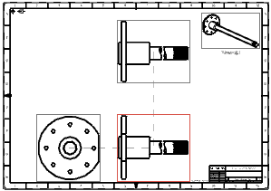

Right-click the border of the ORTHO@14 view, and then choose Edit.
In the Projected View dialog box, in the View Origin group, change the Placement method from Inferred to Hinge, and make sure that the Associative Alignment check box is selected.
Close the Projected View dialog box.
Drag the border of the Front@1 view again and observe all views remain aligned.
This alignment is indicated by the dashed line between the views.

Right-click and choose Undo or type Ctrl+Z to return the views to their original locations.